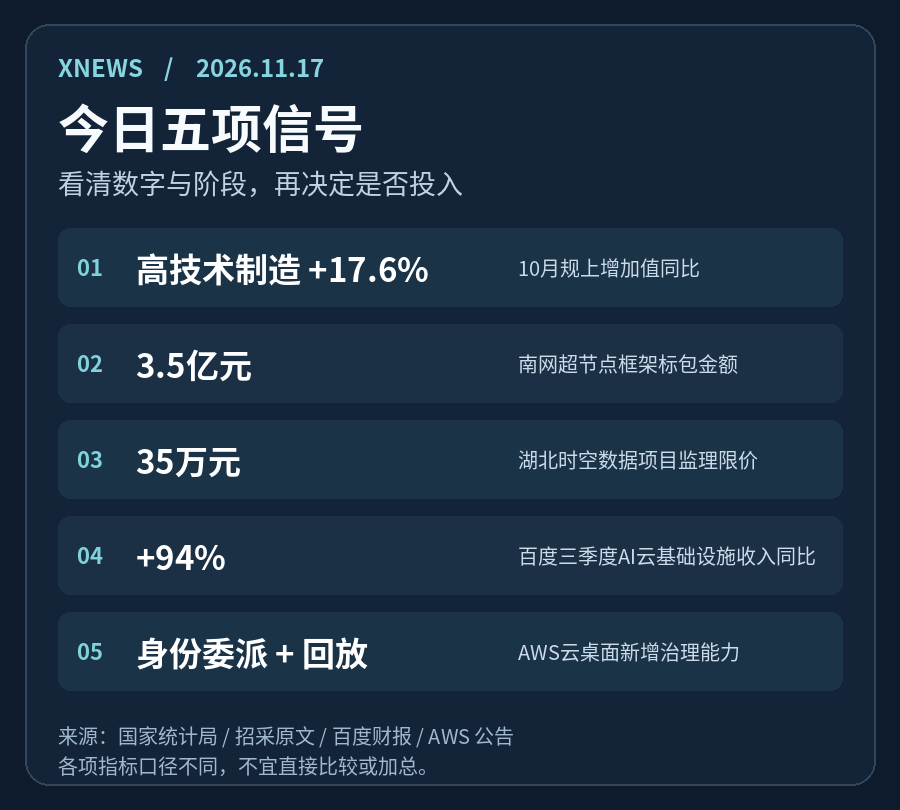

本期口径
北京时间2026年11月17日，检索截止08:11。优先窗口：11月16日08:11至11月17日08:11。AWS原文仅注明当地发布日期，无分钟时间；其余按已核实公告日期和时刻筛选。本期与独立XNews AI日报的Qwen4-Max、格点物理两条不重合。

01｜10月高技术制造增长17.6%，总量投资仍承压
11月16日发布，统计期为2026年10月及1—10月。国家统计局公布，10月规模以上工业增加值同比增长4.8%，其中高技术制造业增长17.6%，工业机器人产量增长26.0%。同期社会消费品零售总额增长0.4%。1—10月，全国固定资产投资（不含农户）同比下降8.1%，高技术制造业投资增长3.0%。技术相关领域与总量投资走势有明显分化。
影响与建议：不能把高技术产出增长当成客户预算普遍宽松。工业数字化项目宜优先验证预算归属、可量化的工位收益和付款节点。
02｜南网在广州招采AI超节点，3.5亿元是框架标包金额
11月16日16:25发布招标公告。南方电网数字电网集团为广州市算力产业发展有限公司招采AI超节点及网络、存储、管理设备。公告列一个标包，金额3.5亿元；最高限价另见报价表。框架自签约起12个月，设备按批次订单据实结算，公告列明采购金额浮动比例为−20%至+20%。采购不接受联合体。
影响与建议：这是本期最明确的硬件窗口。先核对算力卡安全可靠测评名单、关键产品厂家或唯一授权条件，再决定是否投入。11月23日17:30停止取标书；12月15日08:30投标截止。
证据边界：已读南网原发公告，未取得报价表和技术规范书。框架标包金额不是成交额，也不等于实际下单量。 [4]
03｜湖北长江经济带时空数据项目启动监理采购
11月16日发布询比公告。受武汉光谷信息技术股份有限公司委托，湖北省成套招标公告采购时空数据基础设施项目的全过程监理，覆盖从需求、设计到上线、试运行及验收。原公告披露项目总投资8894万元，本次监理最高响应限价35万元，两者不能混用。文件领取至11月20日16:30，响应截止11月26日14:30。
影响与建议：监理是当下可响应的标的，数据平台或设备机会需等各自公告。监理供应商先核对近36个月类似监理业绩：其对应项目总投资至少5000万元；拟任总监也有证书和履历要求。
证据边界：已读采购代理机构原发公告；未获取第五章详细需求，不判断建设包何时释放。 [5]
04｜百度AI云基础设施收入增94%，AI应用收入同比持平
11月16日公布，季度截至9月30日。百度发布未经审计三季报：AI云基础设施收入82亿元，同比增长94%；其中GPU云收入同比增191%。AI应用收入约26亿元、同比基本持平，集团收入308亿元、同比降1%。公司同时披露千帆平台外部客户词元使用收入同比增1159%，未在该段披露对应收入金额。
影响与建议：增长证据集中在基础设施与用量，不能外推到Agent应用收入或公有云利润。看同类业务时，宜分开核算预付、使用收入、合同期限与可验收的应用收入。
05｜AWS WorkSpaces把智能体代办动作变成可回放记录
AWS原文标注11月16日发布，未列具体时刻。AWS宣布为WorkSpaces智能体新增OIDC身份提供方登录，并支持按已登录用户的目录身份、权限和桌面组策略代办；此前已有SAML。会话回放把截图合成视频，并配合动作文字记录，存入客户自己的S3存储桶并使用客户的密钥加密。这是云桌面侧的更新，不是对所有Agent运行时的审计承诺。
影响与建议：企业接入遗留系统，先验证用户委派、权限撤回与操作回放。不只测能否完成任务，也要测回放是否录下敏感字段、谁能访问证据、保留期怎样执行。
证据边界：已读AWS发布说明，未实测功能，未核验中国区可用性或客户落地成本。 [8]
存量事项
武汉5G+工业互联网大会及同期算力互联网大会原定11月18日至20日举行。仍是既有日程，不计新要闻；会后看公开成果是否列到具体场景业主、试点范围和验收条件。 [9]
今日判断
今天最值得立即筛资格的是南网广州超节点采购，别把框架金额提前当订单。湖北的35万元是监理限价，后续建设包要按独立公告识别。宏观数据和百度财报都显示出结构分化，技术供给与算力收入的增长并不意味着应用预算同步转强。对企业Agent，先把身份委派、操作记录和敏感数据控制写进验收，再比较模型表现。